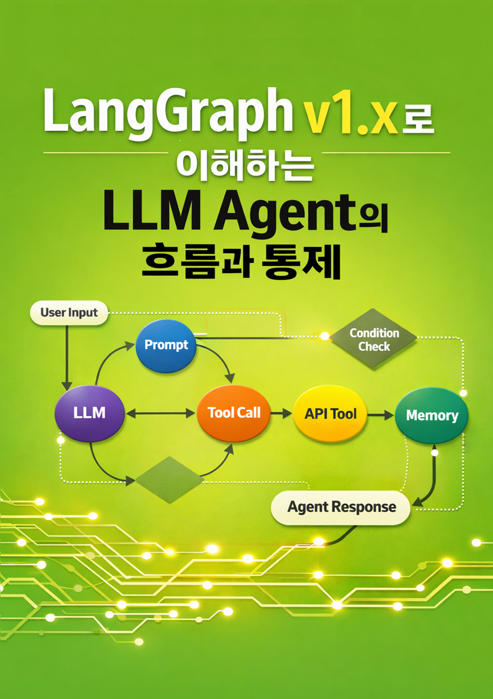

Profile · 다시개발
기록하고, 정리하고, 다시 개발합니다.
개발자로 시작해 분석하고 설계하며 프로젝트를 관리해왔고, 지금은 다시 개발로 돌아왔습니다. 기록과 정리를 통해 본질을 파악하고, 그 기록을 기반으로 더 나은 개발을 만들어갑니다. AI를 공부하며 책을 씁니다.
Publications
책 소개 (전자책)
교보문고 · YES24에서 만나보실 수 있습니다 — 총 4권
개발자로 시작해 분석하고 설계하며 프로젝트를 관리해왔고, 지금은 다시 개발로 돌아왔습니다. 기록과 정리를 통해 본질을 파악하고, 그 기록을 기반으로 더 나은 개발을 만들어갑니다. AI를 공부하며 책을 씁니다.